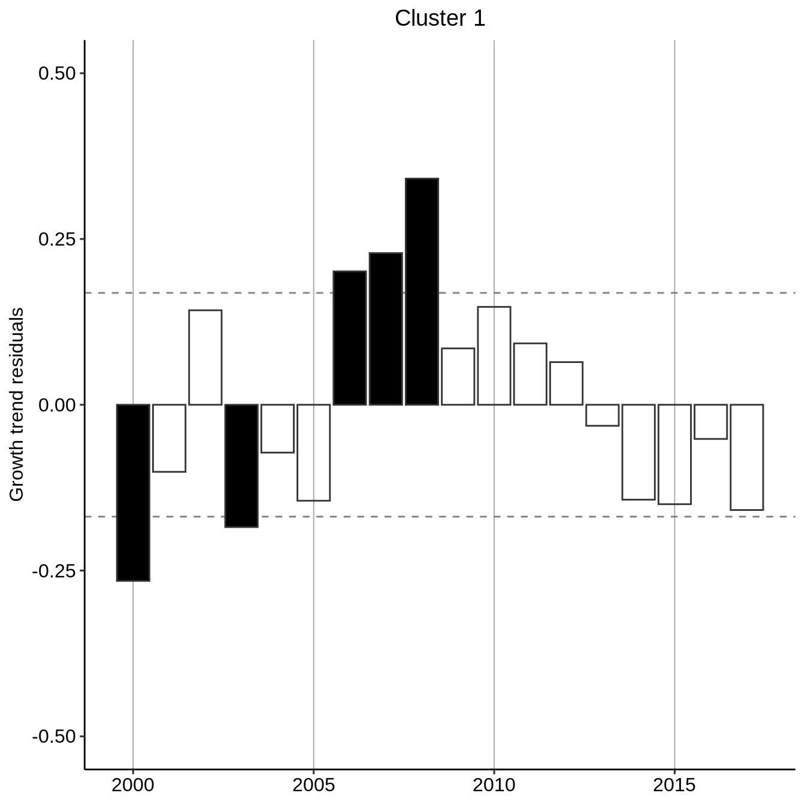
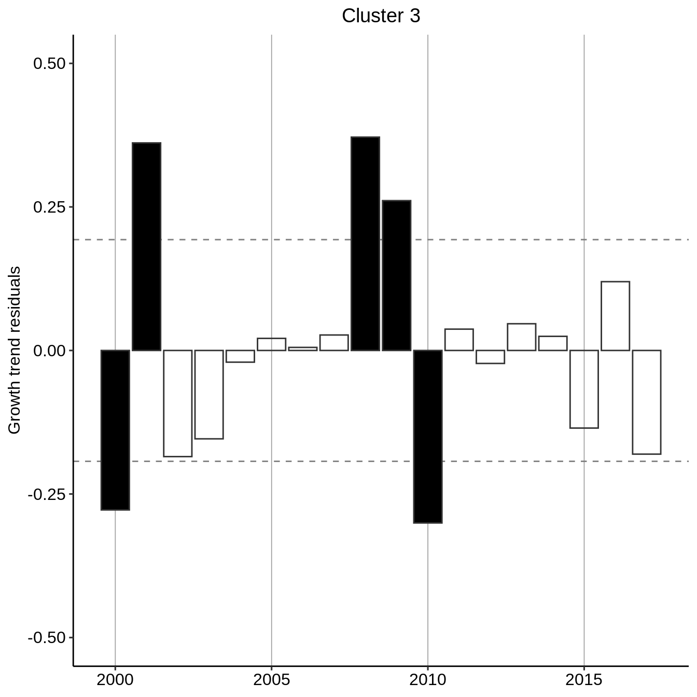

timelines.RmdWe load the consolidated results for the entire corpus which contains the general topics caterogy and the predicted country.
documents_year_location <- readRDS(system.file("extdata", "consolidated_results_NSF_general.Rds", package = "wateReview")) %>% select(c(year, country)) %>% filter(country != "Irrelevant") %>% mutate(country = as.character(country)) dim(documents_year_location) #> [1] 12616 2 head(documents_year_location) #> year country #> 1 2011 Mexico #> 2 2005 Colombia #> 3 1992 Venezuela #> 4 2016 Argentina #> 5 2015 Chile #> 6 2015 Brazil
We group the country by clusters. We define a convenience function to do so which assign the country cluster to country and take care of removing the the Carribean countries which were not clustered.
assign_cluster <- function(country){ cluster1 <- c("Mexico", "Brazil") cluster2 <- c("Chile", "Argentina", "Uruguay", "Suriname", "Guyana", "Belize", "Paraguay", "Costa.Rica", "Cuba", "Panama", "Venezuela") cluster3 <- c("Colombia", "Bolivia", "Jamaica", "Nicaragua", "El.Salvador", "Ecuador", "Honduras", "Guatemala", "Peru", "Dominican Republic") if (country %in% cluster1){ return(1) } else if (country %in% cluster2){ return(2) } else if (country %in% cluster3){ return(3) } else { return(NA) } } documents_year_location <- documents_year_location %>% mutate(cluster = sapply(country, assign_cluster)) %>% na.omit() dim(documents_year_location) #> [1] 12615 3 head(documents_year_location) #> year country cluster #> 1 2011 Mexico 1 #> 2 2005 Colombia 3 #> 3 1992 Venezuela 2 #> 4 2016 Argentina 2 #> 5 2015 Chile 2 #> 6 2015 Brazil 1
count_year_cluster <- documents_year_location %>% select(-country) %>% group_by(cluster) %>% group_modify(~ table(.) %>% t() %>% as.data.frame()) %>% select(- Var1) %>% rename(year = ".", count = Freq) %>% mutate(cluster = as.factor(cluster), year = as.numeric(as.character(year))) %>% filter(year >= 2000) %>% filter(year < 2018) %>% tidyr::complete(year = tidyr::full_seq(year, period = 1)) count_year_cluster$count[is.na(count_year_cluster$count)] <- 0 head(count_year_cluster) #> # A tibble: 6 x 3 #> # Groups: cluster [1] #> cluster year count #> <fct> <dbl> <dbl> #> 1 1 2000 77 #> 2 1 2001 104 #> 3 1 2002 152 #> 4 1 2003 125 #> 5 1 2004 160 #> 6 1 2005 170
growth <- ggplot(count_year_cluster, aes(x = year, y = count, fill = cluster)) + theme_pubr(legend = "none") + geom_area(alpha = 0.6 , size =.5, colour = "white") + scale_fill_manual( values = c("#F8766D", "#00BFC4", "#7CAE00"), labels = c("Cluster 1", "Cluster 2", "Cluster 3") ) + scale_x_continuous( minor_breaks = seq(1980, 2020, by = 1), breaks = seq(1980, 2020, by = 5) ) + theme( axis.title.x = element_blank(), plot.title = element_text(hjust = 0.5), legend.title=element_blank() ) + labs(y = "New water resources articles", x = "Time") ggplotly(growth)
Recognizing an exponential growth, we perform a residual analysis by fitting an exponential curve to the general trend per cluster and evaluating the deviation from this general trend. We additionally flag if the residuals absolute values are greater than one-standard deviation of the residuals.
residual_year_cluster <- count_year_cluster %>% group_modify( ~ data.frame( year = .x$year, resid = lm(log(count + 1) ~ year, data = .x) %>% resid() ) %>% mutate(signif = resid > 0) %>% mutate(signif = ifelse(abs(resid) < sd(resid), NA, signif)) ) residual_year_cluster #> # A tibble: 54 x 4 #> # Groups: cluster [3] #> cluster year resid signif #> <fct> <dbl> <dbl> <lgl> #> 1 1 2000 -0.266 FALSE #> 2 1 2001 -0.101 NA #> 3 1 2002 0.143 NA #> 4 1 2003 -0.184 FALSE #> 5 1 2004 -0.0722 NA #> 6 1 2005 -0.145 NA #> 7 1 2006 0.201 TRUE #> 8 1 2007 0.229 TRUE #> 9 1 2008 0.341 TRUE #> 10 1 2009 0.0850 NA #> # … with 44 more rows
plot_fun <- function(.x, .title = .y$cluster){ p <- ggplot(.x) + aes(x = year, y = resid, color = resid > 0, fill = signif) + theme_pubr(legend = "none") + scale_fill_manual(values = c("black","black")) + scale_color_manual(values = c("grey20","grey20")) + geom_hline(yintercept = sd(.x$resid), linetype="dashed", color="grey50") + geom_hline(yintercept = -sd(.x$resid), linetype="dashed", color="grey50") + labs(title = .title, y="Growth trend residuals") + theme(plot.title = element_text(hjust = 0.5)) + ylim(-.5, .5) + geom_bar(stat = "identity") + theme(axis.title.x = element_blank(), legend.position = "none") + scale_x_continuous(minor_breaks = seq(1980, 2020, by=1), breaks = seq(1980, 2020, 5)) + theme(panel.grid.major.x = element_line(size = .3, linetype = "solid", color = "grey62")) return(p) } residual_year_cluster %>% group_map(~ plot_fun(.x, .title = paste("Cluster", .y$cluster))) #> [[1]]

#>
#> [[2]]#>
#> [[3]]